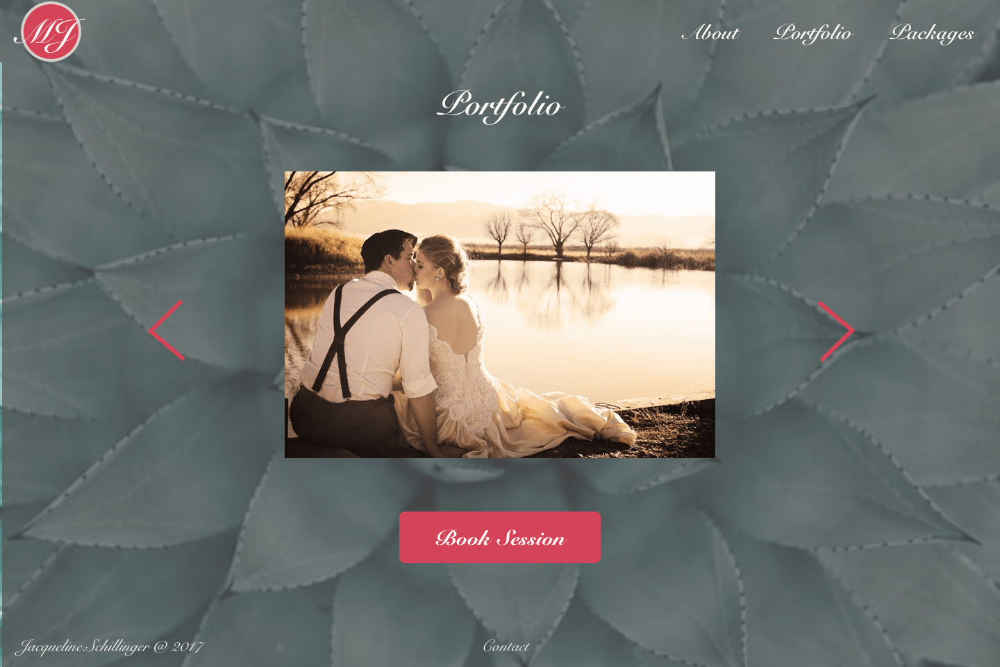
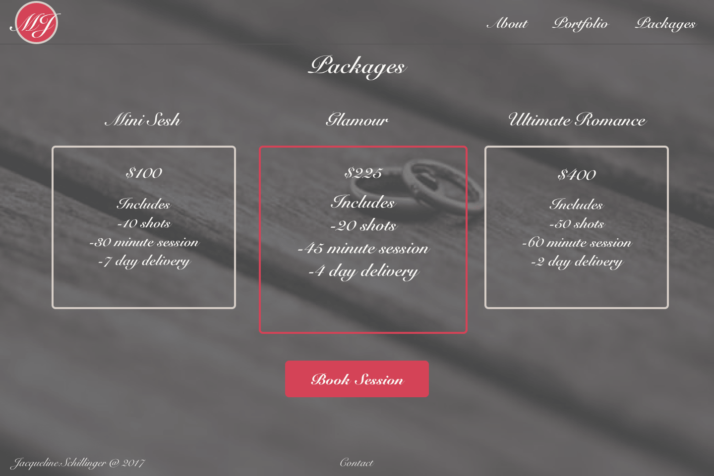
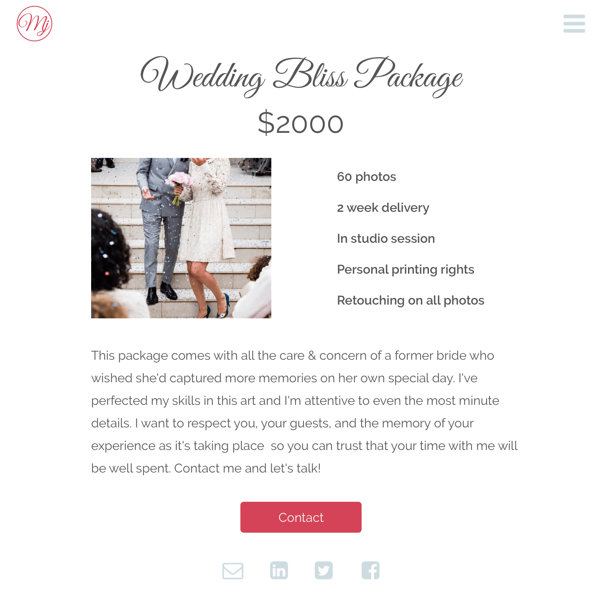

I’m interested in design that benefits others. I want to help those that may not have the experience or resources to execute a functionally aesthetic design. That’s why when I was approached by a friend (aka stakeholder), eager to grow her wedding photography business, I immediately agreed to assist. She didn’t have a website, which can be a real death sentence for a small business.
Building a competitive website was my primary concern. There are numerous professional photographers who have exceptional sites and I needed to design Mj Photography to be a competitor!
To design a site that would entice users to book my stakeholder's services, I needed to research and find out what was working and what wasn’t working with competitors' sites. By gathering that information, I could then incorporate the best ideas from other sites while minimizing aspects of the sites that wouldn’t be cutting edge.
The first thing I did was research my competitors and complete a SWOT analysis. I chose to conduct a SWOT analysis on a wedding photographer from Denver, Colorado, Peoria, Illinois, and Brooklyn, New York to get a better understanding of the differences in style between photographers from different regions so I could be inspired by the best from each.
I mapped out their strengths and weaknesses and chose takeaways from each site that could inspire me for my own.
Image of SWOT I conducted
I noticed a few big trends. The first was minimalism. The photographers that were the most awarded and recognized, including the 3 I conducted my SWOT with, seemed to all have the same thing in common: a lot of whitespace! This gave the sites a clean, luxurious feeling. Whitespace is the difference in feeling between walking into Walmart or Macy’s. I knew I needed to include whitespace in my own site.
The second trend I noticed had to do with prices and packaging. My three chosen photographers all had sites that were surprisingly absent from pricing and packages information. This interested me because if I was going to search for a photographer that would be the first thing I would look for.
I decided to include a question about this second trend in my survey. I got 27 responses and the majority of responses informed me that users prefer to see packages and prices listed on the website right away without having to inquire further. This became a focal point of what I hoped to achieve with Mj Photography.
The third trend I noticed had to do with the portfolio. The portfolio is certainly the focal point of any photographer’s website because per my survey results as well, the portfolio is a major decider for users on whether they will hire that photographer. I knew I would also need to emphasize the portfolio for Mj Photography.

Now that I had researched my competitors and interviewed my users it was time to start on the brand identity! Pearls are symbolic for weddings so I decided to try incorporating that into the logo. I decided to go with the Mj initials surrounded by the pearls because my competitors used either their names or initials for their logos. I discovered quickly through testing that users thought the pearl outline was actually an eyeball and didn’t really see the pearls. Also, it wasn't very scalable. I designed a circle instead with the Mj breaking the barriers of the circle.
Final Draft
1st Draft
Final Draft
I knew from a conversation with my stakeholder that she wanted the typography to be fancy to show elegance but I also knew it needed to be balanced out so that it would be legible. I decided the fancy text would be used for headings only and any paragraph text would need to be a second, more legible font. The buttons and navigation would also need to be legible. I chose Great Vibes for the cursive since it is a beautifully connecting font and fairly popular in the United States. Raleway was chosen for the sans-serif because of its elegance.
Example of Great Vibes Heading and Raleway Sans-Serif Body Text
The colors for Mj Photography started out darker, with deep blues and purples but through user testing I discovered that the colors incorporated into the mockups gave the website a dark and constrained appearance so I continued refining and ended up with a lighter palette of blues and pinks, with darker text colors.
Primary
Secondary
Text
Text
Despite the research I had conducted, my stakeholder was really interested in a darker color palette for a more mysterious air. I decided to do a few mockups for her to view so I could then explain to her with visuals what the research was saying about minimalism and whitespace. When she saw the darker mockups she agreed that the site would be improved with more spacing and brighter colors. Below are the first drafts of the mockups with darker colors and more fancy text used throughout the site. You’ll then see the finished product and what a difference it makes to add space, brighter colors, and more legible typography throughout.
1st Draft Landing: Notice Dark Appearance
1st Draft Landing: Notice Difficult Typography
1st Draft: Portfolio
1st Draft: Contact

Final Draft Landing: Notice Change in Appearance and Typography

The packages page also went through several revisions due to conversations with my stakeholder, and user testing. The packages page started out very dark with limited hierarchy. The second draft shows a drastic difference in color, typography, and added hierarchy. The final draft gives us more whitespace and a luxurious space to explore.
1st Draft Packages: Notice Darkness and Lack of Hierarchy
2nd Draft: Lighter and Better Hierarchy

Final Draft: Notice Better Whitespace
Originally I did not have a package details page but after interviewing some users I discovered it would be beneficial to have an additional page that gave more information of the package instead of making them contact my stakeholder to inquire. You’ll see below two drafts of the package details page. The final draft simplifies the information hierachy and makes it easier to view and digest.
1st Draft
Final Draft
The research I had conducted earlier in my process informed me that a gallery was going to be of utmost importance. As a result, I dedicated time to finding the most responsive and functional way to build it. I knew I did not want it to be a long page users had to scroll through endlessly but I also did not want to solely rely on a carousel with no "big picture" opportunity. As a result, I found a method using Javascript that would allow me to showcase thumbnail photos when the album is clicked into but also to click a photo, view it full size, and then click through a carousel of the other photos. This method provided users with multiple options.
Gallery Snapshot from Landing Page
Thumbnail Version of the Gallery Once a Couple is Clicked On

Carousel Version of the Gallery Once a Photo is Clicked On

I have two last things I want to point out.
1. The navigation bar drastically changed from the first draft of my website to the final draft. This is because, per expert feedback, the top navigation appeared cluttered and the majority of links led to different parts of the same hero page. I checked with users and discovered that while the information was valuable no one considered it a loss for the information to be tucked away into a dropdown.
2. I added some unique scrolling interactions and animations to the site which these mockups do not have the capacity to showcase. To view the live site please make sure you click on the button at the bottom of this page after reading my final thoughts.
This project was interesting to me because of my desire to work with people and help them on their journeys through using my ability to design. I talk about wanting to help people all the time but this project provided me an actual opportunity to do that. It was also a unique experience to actually work with my stakeholder (aka my friend) and collaborate with her directly! I had to design a project with her feelings and desires specifically in mind and then work with her on solutions to every problem down the line. I had to balance user research and feedback, my stakeholder's opinions, and my own expertise to design a competitive wedding photography site! Working with people can be frustrating at times but it is so rewarding, especially when I’m able to produce something good for them that can help them on their professional journey.